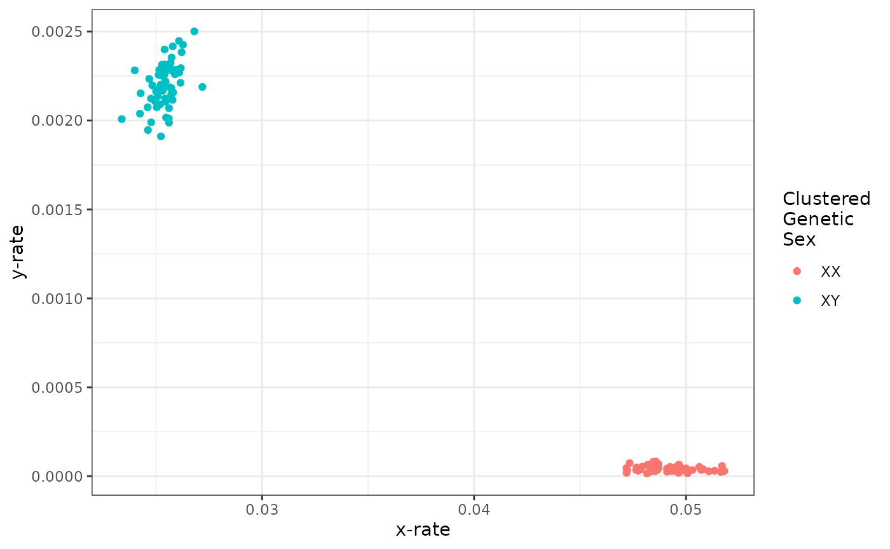
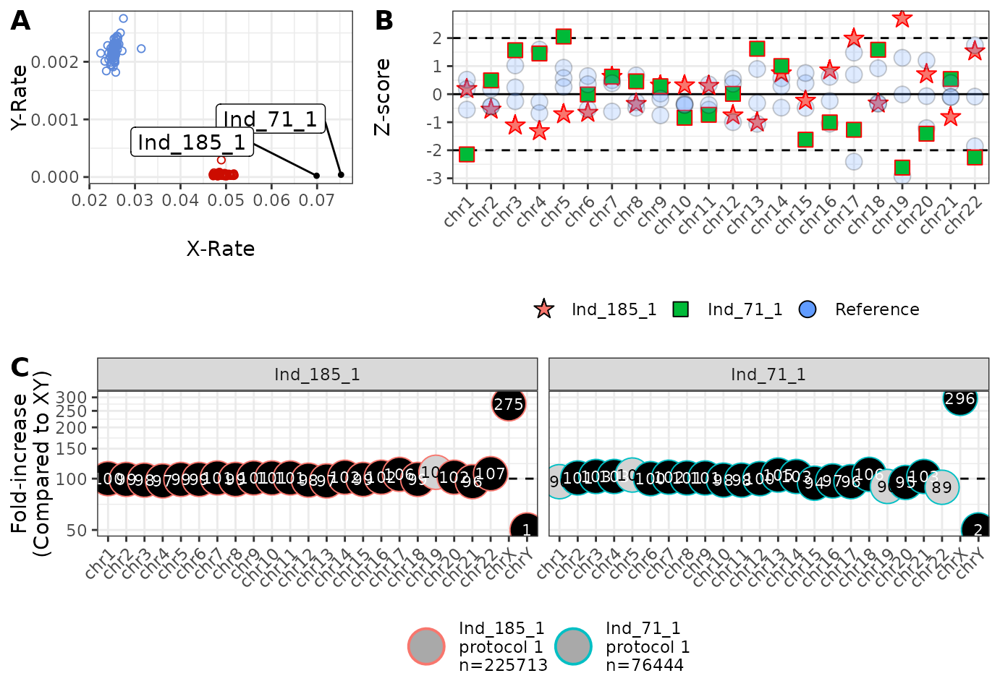

example_analysis
example_analysis.Rmd
library(RChASM)
library(magrittr)
library(mclust)
#> Package 'mclust' version 6.1.2
#> Type 'citation("mclust")' for citing this R package in publications.
data(example_data)
# Makes the read count input tibble for autosomal aneuploidies
indat.auto.example <- example_data %>%
processReadCounts(refType = 'auto', minProtocol = 30, minTotal = 1e3)
# Makes the read count input tibble for sex chromosomal aneuploidies
indat.sca.example <- example_data %>%
processReadCounts(refType = 'sca', minProtocol = 30, minTotal = 1e3)
# Calculate parameters for the Dirichlet prior for autosomal aneuploidies
inDirichlet.auto.example <- makeDirichlet(
indat.auto.example,
refType = 'auto',
min_reads = 1e5,
max_reads = 1e9
)
# Calculate parameters for the Dirichlet prior for sex chromosomal aneuploidies
# (Warning: this one produces a plot for making sure the clustering makes sense!)
inDirichlet.sca.example <- makeDirichlet(
indat.sca.example,
refType = 'sca',
min_reads = 1e5,
max_reads = 1e9
)
# Makes karyotype calls for autosomal aneuploidies
calls.auto.example <- callKaryotypes(
indat.auto.example,
inDirichlet.auto.example,
p_contamination = 0.01
)
# Makes karyotype calls for sex chromosomal aneuploidies
calls.sca.example <- callKaryotypes(
indat.sca.example,
inDirichlet.sca.example,
p_contamination = 0.01
)
# Calculate Z-scores
z.scores.example <- makeZscores(
indat.auto.example,
min_reads = 1e3,
max_reads = 1e9
)
# Test diagnostic plot is working!
plot_diagnostic(
'Ind_1_',
calls.auto = calls.auto.example,
calls.sca = calls.sca.example,
inDirichlet.auto = inDirichlet.auto.example,
inDirichlet.sca = inDirichlet.sca.example,
z.scores = z.scores.example,
min_reads = 6e4,
max_reads = 1e9,
addLabels = TRUE
)
#> Warning: Removed 1 row containing missing values or values outside the scale range
#> (`geom_text()`).